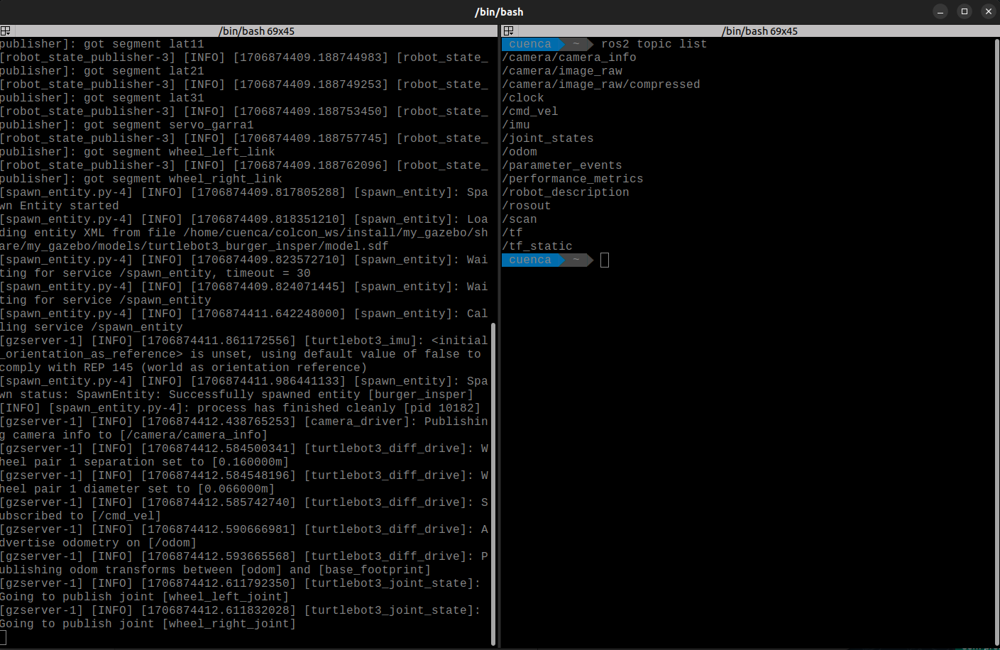
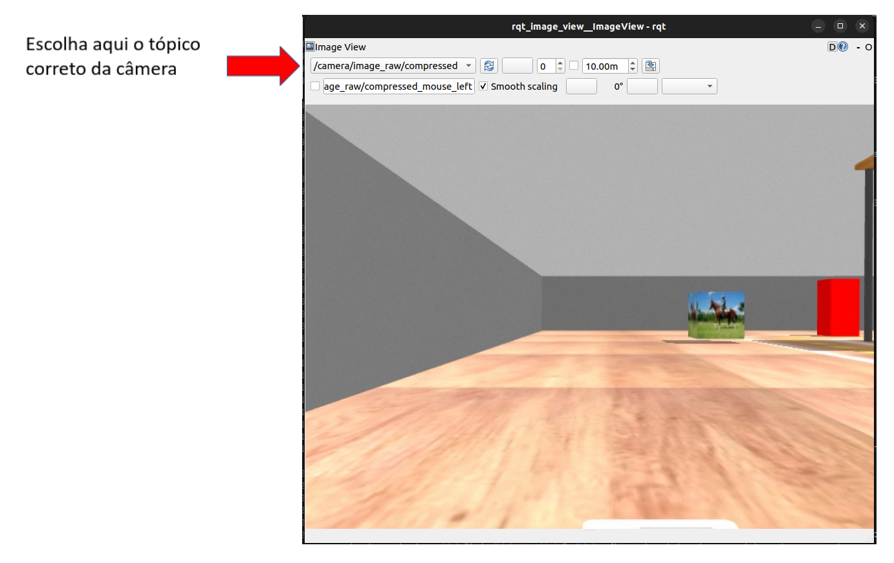

Primeiros passos com o Robô Simulado
Neste guia iremos executar comandos para rodar o simulador usado na disciplina. O objetivo aqui é verificar se está tudo funcionando. Várias coisas serão um pouco misteriosas por enquanto, mas ficarão claras durante o semestre.
Configurando o arquivo .bashrc
O arquivo ~/.bashrc é excutado toda vez que abrimos um terminal. Nele podemos colocar configurações personalizadas para cada usuário. O SSD de robótica tem coisas úteis para as disciplinas de robótica e elementos.
Dica 1
Usamos o ~ como uma abreviação para a pasta home do usuário atual. No nosso caso, é equivalente a digitar /home/borg/
Details
BASH significa Bourne Again Shell. Há um número de shells diferentes, incluindo csh, zsh, dash e korn.
Um shell é um interpretador que executa operações como navegar por um sistema de arquivos, executar programas, modificar permissões, enfim, é uma ferramenta importante do sistema operacional.
Dica 2
O arquivo ~/.bashrc é um arquivo oculto, por isso tem um “.” no início do nome.
Para editar seu .bashrc, abra um terminal (Ctrl + Alt + T) ou (Super + T) e use o comando abaixo:
gedit ~/.bashrc
Perceba que lá no final do arquivo, temos algo como;
###################################################
### Adicionado 3o Sem Comp 2024 - Lab 404 - INF ###
source ~/robotica.sh
source ~/elementos.sh
###################################################
Isso é porque estamos ativando esses arquivos que estão localizados na home, o elementos.sh e o , robotica.sh. Eles definem configurações especificas para o ambiente, tanto da matéria de Robótica, como da matéria de Elementos de Sistemas.
Abrindo o simulador
Execute o comando abaixo em um terminal novo para subir o cenário pista_s2 no simulador Gazebo.
ros2 launch my_gazebo pista-23B.launch.py
O seu terminal vai exibir algo parecido com isso:
Atenção
Não feche o terminal, o gazebo está sendo executado através dele, se precisar usar o terminal, é melhor abrir um novo e deixar esse quietinho.
Essa é a janela do Gazebo, o nosso simulador, com ele podemos simular o comportamento do robô, dos seus sensores, câmera, garra, quanto dos objetos como os creepers, arucos ou caixas coloridas. O ROS não sabe diferenciar se os dados estão vindo de um robô simulado ou se estão vindo de um robô real. É dessa forma porque os dados dos sensores chegam para o ROS através de tópicos, também é pelos tópicos que nós conseguimos enviar comandos para os motores ou para a garra do robô, isso é interessante porque via código o tratamento dos dados é bem parecido, tanto no robô real quanto no robô simulado. Para saber quais são os tópicos disponíveis para o ROS, abra um novo terminal (Ctrl + Alt + T) ou com o botão direito do mouse, divida a tela do seu terminal atual e use o comando:
ros2 topic list
Uma lista de tópicos como essa vai aparecer pra você no terminal:

Conseguimos “escutar” os dados dos sensores que estão chegando via ROS usando o comando ros2 topic echo nome_do_topico
ros2 topic echo imu
Se quiser parar de acessar os dados da IMU do robô simulado, use o Ctrl + C
Para abrir a câmera do robô use o comando:
ros2 run rqt_image_view rqt_image_view
Se a imagem não aparecer, provavelmente você está escutando um tópico fantasma, basta trocar a opção para acessar o tópico certo, conforme imagem abaixo:

Com o comando abaixo, podemos publicar valores de velocidade angular e linear direto no robô simulado
Em um novo terminal, utilize o comando fazer o robô andar loucamente:
ros2 topic pub -1 /cmd_vel geometry_msgs/msg/Twist "{linear: {x: 0.4, y: 0.0, z: 0.0}, angular: {x: 0.0, y: 0.0, z: 1.0}}"

Com o mesmo comando, podemos enviar 0 para os motores, parando o robô, este comando pode ser útil em momentos de emergência.
ros2 topic pub -1 /cmd_vel geometry_msgs/msg/Twist "{linear: {x: 0.0, y: 0.0, z: 0.0}, angular: {x: 0.0, y: 0.0, z: 0.0}}"

Também conseguimos teleoperar o robô com o comando abaixo:
ros2 run turtlebot3_teleop teleop_keyboard
Para controlar o robô, use
- w para ir para frente
- s para parar o robô
- a para ir para esquerda <
- d para ir para direita >
- x para dar ré
É importante que você mantenha o terminal ativo para conseguir teleoperar o robô (clicando no terminal pra ativar ele)

Foi divertido, porém, vamos controlar o robô via código não é mesmo?
Se estiver com o teleop aberto, mate o terminal, clicando no terminal que está com o comando do teleop e apertando as teclas Ctrl + C. Não é legal ter lugares diferentes enviando comandos para o robô, normalmente dá conflito.
Parando o robô
Vamos mover novamente o robô, desta vez, sem passar o argumento -1 que limita o número de vezes que o comando é publicado.
ros2 topic pub /cmd_vel geometry_msgs/msg/Twist "{linear: {x: 0.4, y: 0.0, z: 0.0}, angular: {x: 0.0, y: 0.0, z: 1.0}}"
Para interromper o comando, use o Ctrl + C, você perceberá que o robô continuará girando loucamente, apesar do comando não estar sendo executado. Isso acontece porquê o robô mantém em execução o último comando enviado. Se você quiser parar o robô, é preciso enviar 0 para os motores, como fizemos anteriormente, mas desta vez vamos fazer diferente. Vamos facilitar nossa vida para futuros momentos caóticos de robô desgovernado, criando um alias no seu arquivo robotica.sh.
Primeiro, abra o arquivo robotica.sh
code /$HOME/robotica.sh
Depois, defina o alias que será o seu “comando de emergência” no arquivo robotica.sh, vou deixar um de exemplo aqui, mas você pode personalizar o seu.
# Comando para parar o Insperbot
alias sos='ros2 topic pub -1 /cmd_vel geometry_msgs/msg/Twist "{linear: {x: 0.0, y: 0.0, z: 0.0}, angular: {x: 0.0, y: 0.0, z: 0.0}}"'
Dica 3
Um alias é um apelido para um comando já existente. Quando digitarmos sos no terminal o bash irá substituir por todo aquele comando.
Salve o arquivo, abra um terminal novo e teste o seu alias, ele será seu fiel companheiro. Lembre-se de que é preciso encerrar o código python que controla o robô para que não existam comandos concorrendo o controle do robô.
Retornar o mundo simulado para posição inicial
Apertando as teclas ctrl + r você pode reiniciar o mundo simulado.